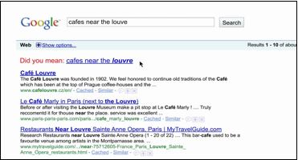
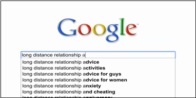

THEORY BEYOND THE CODES
Search On: Fictionalizing the Sensational Micropolitics of Google's Parisian Love
John A. Sweeney
We love because he first loved us.
-- 1 John 4:19
If the work of the city is the remaking or translating of man into a more suitable form than his nomadic ancestors achieved, then might not our current translation of our entire lives into the spiritual form of information seem to make of the entire globe, and of the human family, a single consciousness? [1]
On February 7, 2010, millions of Americans watched the New Orleans Saints defeat the heavily favored Indianapolis Colts in what is considered by many to be one of the largest rituals in popular American culture -- the Superbowl. Regardless of one's opinion on the tenets of professional sports in the U.S., the Superbowl has arguably become part of the nation's collective consciousness and identity, especially for what has become for many far more interesting than the game itself -- the commercials. While various ads on everything from aftershave to Audis aired during the broadcast, Google ran its first ever television commercial, Parisian Love, during the illustrious third quarter of play. The one minute spot may still be viewed on the Google-owned YouTube.com as part of their "Search Stories" campaign, which includes a collection of shorts that demonstrate their product's myriad features -- most of which are supported through sales and marketing placements strategically embedded within the company's various "free" applications and services.
As the single largest arbiter of advertisement space on the Internet, one of the wealthiest media companies in the world, and the preferred instrument for roughly seventy percent of all Internet searches performed in North America and an even larger marketshare globally, Google forms the silicone crème of the digital crop. On the official Google blog, Eric Schmidt, Google's now former Chief Executive Officer, provided some sense as to why the transnational corporation would shell out just over $3 million dollars, clearly a mere drop in the proverbial bucket, on the one-minute Superbowl spot. He intimates, "We didn't set out to do a Super Bowl ad, or even a TV ad for search. Our goal was simply to create a series of short online videos about our products and our users, and how they interact. But we liked this video so much, and it's had such a positive reaction on YouTube, that we decided to share it with a wider audience." [2]
Schmidt's gambit appears to have paid off, and the audience was unquestionably wide -- Superbowl XLIV was the most watched and highest rated telecast of 2010 with over 100 million viewers, which is slightly less than half of the entire adult U.S. population. The telecast only recently succumbed to the 2011 Superbowl whose viewership reached an audience of 111 million, but this event passed without an advertisement from Google, which is perhaps a sign that they said all that they needed to say with Parisian Love. Although the premise of this analysis seems pedestrian in claiming that Google is an extraordinarily powerful and exacting administrator in the workings of all things Internet, this assertion does not adequately contextualize present circumstances, especially in accounting for the subtle, yet ubiquitous, ways in which Google's media technology aims to routinize the discontinuous flows and networks of information that comprise daily life. Operating by and through an assemblage of products and services that manage, record, and organize the decidedly personal features of one's very being-in-the-world, Google has firmly situated itself within the sensory realm of human existence. As explained in an examination of Google's myriad user-based features and applications on OneUpWeb:
For most of us it means that Google knows as much about us as we know about ourselves. If you have ever done a search on Google for something private, blogged anonymously to get things off your chest, stored pictures on Picasa or uploaded videos to YouTube that you haven't shared elsewhere -- Google knows. And, in some cases, Google is using that same information to determine how to customize site content and deliver ads to you. [3]
Google's decidedly person-centered "Webgemony" exists as a testament to its paramount goal to be the Internet, and they appear to have succeeded in this endeavor, certainly in North America where they boast the highest rate of marketshare for Search. [4] Additionally, the convergence of a social profile, or Google account, further entrenches their saturation in the still-expanding North American market, especially with regard to primary and higher education. Although Facebook's social networking clout has begun to form cracks in the facade of Google's sovereignty by eclipsing it as the most visited site of 2010, the Mountain View mammoth remains positioned at the top of the heap concerning the dissemination, flow, and storage of information for American Internet users, who submit roughly 2.7 billion queries annually through Google's formidable Search interface.
In the wake of a recent flurry of legal actions over privacy standards, cries of monopoly in Europe, some less than conciliatory confrontations with the People's Republic of China, a failed attempt to combat Facebook with the ill-received "Buzz" social media interface, the explosion of the mobile web, and an apparent coup in management leading to the replacement of Schmidt as CEO, Google's pristine image has accrued some tarnish of late, but these minutiae, as yet, have had little or no consequence; if anything, these hurdles have only spurred further diversification and innovation. The development of a Google-based operating system housed in a Google-branded tablet and laptop on the coattails of their highly successful Android line of smart-phones, which dwarfed Apple's revolutionary iphone in sales during the first quarter of 2010 [5] and rose to become the most popular cellphone operating system in the world [6] by the end of last year, points toward increased penetration into the everyday life of Americans, who now average thirty-four gigabytes of digital data consumption per day. [7] In light of this continued dominion and ever-rising usage, the focus of this investigation hinges on the micropolitical tropes and textures embedded within Google's Parisian Love. As Brian Massumi suggests, "The ultimate vocation of micropolitics is this: enacting the unimaginable." [8] The aspect of what is (un)imaginable from a critical micropolitical perspective is precisely what escapes sensation -- that which is concerned with and concealed sensorily within a discourse or narrative framework.
Exploring the advertisement as an (un)imaginable discourse, one can begin to extrapolate an implied narrative replete with characters, plot twists, and a subtle, yet exacting, deus ex machina -- it is precisely these encoded, which is also to say hidden, semiotics of the work that ameliorate the interpretative context for the story. As Kittler contends, "Interpretation is only a special instance of the general technique of transposing media. There is no psychological bridge between the encoding author and the decoding interpreter, but a technical contest." [9] This technical contest, as outlined by Friedrich Kittler and championed by the very ethos of Search, attempts to contextualize the materiality of the ad's discursive formations, which remain grounded in a specific grammar. Thus, it is crucial to delimit the speech acts surrounding and pronouncing the advertisement as a point of entry for elucidating the mythos of Parisian Love. Taking Schmidt at his word, one might inquire, what are the very conditions of possibility that led Google to place an advertisement at this precise historical moment? In other words, what specifically did Schmidt, speaking as and for Google, "like" about the "interaction" between the "user" and the "product" within Parisian Love? What, if anything, is at stake in this normative grammar and how does it speak to the discursive formations underlying its constitutive meaning? What, precisely, might it tell us about Google's conception of love?
Where is My (Extended) Mind?
In response to a derogatory article appearing in the Atlantic about the impact of media upon intelligence and human communication, Carl Zimmer penned "Turn On, tune in, pop out: Why the wired world is turning out to the the real mind-expanding drug" in the February 2009 issue of Discover magazine, which he later adapted into a chapter, "The Googled Mind," for his 2010 ebook, Brain Cuttings: Fifteen Journeys Through the Mind. Taking up the "extended mind" argument, Zimmer argues, "we ought to focus on managing and improving [these] connections. For instance, we need more powerful ways to filter the information we get online, so that we don't get a mass case of distractability." [10] Surrounded by media and technologies that necessitate conscious, and in many ways unconscious, interface, it seems that our present age defines itself according to mediating, perhaps literally, these "distractions." In a May 2010 commencement speech at Hampton University, President Obama criticized media technologies, particularly entertainment-related devices, observing that "information becomes a distraction, a form of entertainment, rather than a tool of empowerment, rather than a means of emancipation." [11] When positioned alongside Zimmer's argument, President Obama's statement, which drew indignant ripostes from technophiles across the political spectrum, gives voice to the rising collective consciousness and concern relating to media, information retrieval, and distractability -- all of which center on the flow of power. As William Bogard observes, "To distract something is to elude its clutches; but also, as a consequence, to now clutch it, secretly and from behind. These qualities of clutching, elusion, of escape and capture, are what make distraction and its related strategies -- simulation, disappearance, removal -- games of power." [12] Is this nascent discourse, especially with regard to socio-economic power, what led Google to place a commercial for Search during the America's most beloved game? What precisely is meant by the term "distraction" with concerning the power of sensation, politically speaking? What, perhaps most importantly, is it exactly that demands our continued and focused attention?
Zimmer's invocation of "distraction" speaks directly to Walter Benjamin's deployment of the term in his seminal essay, The Work of Art in the Age of Mechanical Reproduction. As Benjamin intimates, "distraction as provided by art presents a covert control of the extent to which new tasks have become soluble by apperception. Since, moreover, individuals are tempted to avoid such tasks, art will tackle the most difficult and most important ones where it is able to mobilize the masses." [13] For Benjamin, aesthetic distraction can and might be a form of protest -- a cogent counter-ideological movement against the normative flows of cultural and material production; for others, particularly Obama and Zimmer, distraction is a dangerous pathway towards socio-economic stasis. This doubling of distraction -- as both a loss and product of one's bodily, and by extension sensory, being -- forms the very ground by which these "extended mind" technologies, including Google, enact a grammatical mode of being within a fictionalized framework of prosumptive -- production/consumption -- desiring. [14] The dawn of the prosumer was heralded by Alvin Toffler, who noted the socio-economic amalgamation implicit within this marriage in 1980's The Third Wave. He argues, "We see a progressive blurring of the line that separates producer from consumer. We see the rising significance of the prosumer. And beyond that, we see an awesome change looming that will transform even the role of the market itself in our lives and in the world system." [15] In the 30 years since Toffler coined the term, the market has indeed transformed, and what is most evident under the aegis of the prosumer is the supremacy of spatial and temporal consciousness, which, as Paul Virilio notes, bring to bear myriad causal concerns since "at the very moment we are being told that the Internet is bringing us freedom in terms of place and time, we see that by sheer coincidence information trusts are emerging, world-wide conglomerates, which, incidentally, are no longer simple multinational corporations." [16] The question, then, centers on whether or not these information trusts should in fact be trusted, and, perhaps most importantly, to whom have we entrusted our extended minds?
As such, Google's webgemony portends the advent of info-normativity as a site of micropolitical conflict and resistance, but only if one senses a problem, so to speak. Indeed, Google's myriad products and services appear to make our lives as well as one's work more fluid and seamless, but there resides an implicit suggestion as to what we should do with our free time -- prosume. Consequently, production itself has been overrun by consumption, and Search epitomizes this intrinsic duality at the heart of our all-too-modern world. At the end of the (trading) day, Google's shareholders wait with baited breath in anticipation of lucrative financial returns, which are the result of the corporation's ability to place ads within and on its various products and services, which in turn remain dependent upon the active production of users typing emails, setting dates in calendars, performing searches -- simply going about their daily lives. Capital, as it were, is produced from one's personal circumstances -- from uploading a picture of one's dog to adding a dentist appointment to one's calendar; Google has found a way to monetize the mundane monotony of everyday life -- the ultimate game of power from which one cannot be distracted.
In instantiating these products and services into the very sense of one's day, Google has effectively transformed distraction, doubled again in the context of prosumption -- one that maintains a stranglehold on sharing, storing, and accessing information necessarily extending the limits of consciousness to encompass all that was, is, and perhaps, will be. In defense of this turn, Zimmer argues, "The extended mind theory doesn't just change the way we think about the mind. It also changes how we judge what's good and bad about today's mind-altering technologies. There's nothing unnatural about relying on the Internet -- Google and all -- for information." [17] It is not difficult to surmise Zimmer's overarching point regarding what President Obama equally fails to realize in his commencement remarks -- it is simply too late to talk about changing the way that media technologies impact our lives -- about empowerment and emancipation; rather, one must find ways to remain human in spite of the overwhelming tide of prosumptive info-normativity. As now former Google CEO Schmidt opined in an August 2010 interview with the Wall Street Journal, "I actually think most people don't want Google to answer their questions." [18] Coalescing Zimmer and Obama succinctly, Schmidt sardonically continues, "They want Google to tell them what they should be doing next." [19] In taking control of one's extended mind, Google has firmly grasped the inchoate nature of consciousness itself, but might this onto-epistemological suzerainty signal a return to pre-consciousness?
Outlining the formation of consciousness in ancient Greece, Julian Jaynes observes, "In the bicameral era, the bicameral mind was the social control, not fear or repression or even law. There were no private ambitions, no private grudges, no private frustrations, no private anything, since bicameral men had no internal 'space' in which to be private, and no analog "I" to be private with. All initiative was in the voice of gods." [20] While social media certainly merits such comparison in its ubiquituous connectivity, Schmidt's utterance resonates with Jaynes' estimation of bicameral humanity -- especially concerning the intractable voice of the gods. In light of such ominous transparency, which led Schmidt and Google to be labeled "creepy" and perhaps Schmidt's eventual departure as CEO, one can begin to feel the discursive parameters forming amidst the ceaseless flows of information across countless networks, and, perhaps most significantly, the prosumptive desiring embodied by and through Google's most well-known and highly-regarded product -- Search.
Elucidating this epoch from which Parisian Love arose, one can begin to circumscribe the telos of Parisian Love as a work of art in the age of media production, to paraphrase Benjamin. Google certainly intends to transform Search into an art, in theory if not in practice, and this task is evident in its rise to dominance within the industry. As one of the most recognizable brands of the age of media production, Google's ascension to Internet supremacy over the last decade has been nothing short of herculean, and it remains, perhaps painfully, aware of its unique sovereignty. Of all the goods and services that Google freely provides from Gmail to Maps, it chose to exhibit to the American television viewer what made it phantasmagorically rich and indispensable to the average Internet user: Search. As one of the most well-guarded secrets of web technology, Google's Search algorithm is a chimera, baffling the mind with its seemingly a priori results, which compile scads of user data as a means to provide relevant findings. [21] As Levy notes in his examination of the media giant's Search, "Google has built a machine nimble enough to absorb almost any approach that threatens it." [22]
In sum, Google's algorithmic assemblage is a monster -- one that shows us only what we want to see, but one that also requires our own eyes to see for, and perhaps through, us. Reflecting on a similar radical reconciliation of duality, Slavoj Zizek notes, "... the monstrosity of Christ ... hinges on a contingent singularity through which alone it actualizes itself." [23] Singularity is a highly contentious term often associated with the post-humanism of Ray Kurzweil, who has become the prophet of sorts for "a future period during which the pace of technological change will be so rapid, its impact so deep, that human life will be irreversibly transformed." [24] Ultimately, this transformation is one of both mind and body, and the prosthetic extension of both signals a new spirit at work in the human experience. As Stone reflects, "Prosthetic sociality implies new and frequently strange definitions of space, volume, surface, and distance; in prosthetic sociality the medium of connection defines the meaning of the community." [25] Embodying a homologous "contingent singularity" with equally profound spiritual implications, Search has become fully human and fully divine in its incarnated info-normativity whose actualization rests in the exchange value of one's personage within a global body of pious users. The user, as such, is saved by and through the product while the product is born again by and through the user -- distraction, as such, mutates into extraction, so long as one confesses with keystrokes or, in light of Google's evolving voice search feature, one's lips. As Schmidt explains, "So, where do we go next with Search? Well, you've got personal contacts, personal emails, personal networks of people and your relationships with them, and with your permission, and I need to say that about five hundred times, and with your permission, we can actually search and index that information and make all of these answers so much better." [26] Simply put, the future of Search sets out to do nothing short of making sense of our lives through the delicate process of coming to know us better than we know ourselves, which has the potential to reverse the nature of prosthetic sociality if the conditions of possibility for a contingent singularity were to come into being under the algorithmic sovereignty of Google. This dynamic situates Parisian Love as a work of political theconomy -- an uneasy union between political economy and political theology brought about by its encompassing and experiential encasement of sensory consciousness, which resides at the heart of political agency.
Story as Argument/Argument as Story
In explicitly concerning itself with the workings of one's somatic positioning as a human, Google participates in what Jacques Rancière calls the distribution of the sensible -- the creation, partition, and institutionalization of one's sensory or bodily experience. He elucidates, "A distribution of the sensible is a matrix that defines a set of relations between sense and sense: that is, between a form of sensory experience and an interpretation which makes sense of it." [27] Accordingly, Search acts as an agent of sense-making -- an ongoing process that reveals and conceals what can and cannot be seen. Orchestrating a "regime of visibility" that normalizes the disruptive fissures of one's (in)ability to know, the pedagogical and epistemological methodology of Google search might best be described as anti-Socratic since the very process of understanding occurs through a disembodied monologue whose sensibility creates wisdom outside of thyself. [28] As Zimmer concludes, "Socrates worried that writing would make people forgetful and unwise. Sure enough, writing did rob us of some gifts, such as the ability to recite epic poems like The Iliad from memory. But it also created a much larger pool of knowledge from which people could draw, a pool that has continued to expand (or, dare we say, continued to extend?)." [29] The metaphor of the pool serves to actualize the micropolitical features of Search, specifically how strokes -- like those found in swimming and in touching a keyboard -- can and might be routinized through the repetitive movements of one's sensing body. Indeed, Google's results are delicately crafted and organized to make the most sense and in so doing both draw on and appeal to consensus, literally "with sense." As such, this ordering presences a particular aesthetico-political regime -- one that produces as it reports and consumes as it constructs information from sensation.
Noting the implications of this turn, Tiziana Terranova observes, "Information is thus not so much the content of communication as a "transductive arrow" -- as it attempts to determine a direction for future actualization. Hence all communication of information, as the cyberneticians well knew, is also a form of control over the fluctuations of an unstable physical milieu." [30] In Nietzschean terms, the contemporary spatio-temporal trajectory of information is decidedly Apollonian in regard to its requisite distance in both content and form, and with no Dionysian counter-balance, one can envision the inevitability of the Socratic moment, which marks the "turning-point and vortex of so-called universal history." [31] This democratization, which at present is also to say corporatization, of information reaches its apotheosis in Search's necessary info-normativity as a means to direct the otherwise incongruous aspects of one's sensory being-in-the-world thereby creating a false, which is also to say manufactured, consensus with unique consequences in the realm of political agency.
Ameliorating the context for making sense of political agency, Rancière actually observes the arrival and the emergence of the political within democratic milieux in moments of dissensus. Extrapolating from Rancière, May writes that dissensus "is the refusal to recognize the existing order of things, not in the name of another order, but in the name of equality." [32] Politics, as such, gets obscured via a regime of visibility through the construction of a "logic of representation," which reinforces sensorily only what fits the rationale of the dominant aesthetic. [33] Concordantly, Kittler contends, "Under conditions of high technology, the work of putting things in order (this structural activity) becomes as old-fashioned as it is inescapable." [34] Google is indeed concerned with the aesthetic enterprise of putting things into order for its users, which perhaps even includes putting users in order, in some sense. As Schmidt candidly noted in an October 2010 interview with the Atlantic: "We don't need you to type at all. We know where you are. We know where you've been. We can more or less know what you're thinking about." [35]
While there is a collaborative component to Google's search functionality -- a hallmark of the emergence of Web 2.0 and its emphasis on interactivity and customization -- Google's algorithm calculates and reproduces this data enigmatically and without attention to otherwise anomalous, or dissenting, results -- paradoxically eschewing and employing a sizable degree of info-normativity among searchers and queries. Even the infamously playful "I'm Feeling Lucky" search button, which simply directs one to the top result, fell victim to info-normativity, which it itself directed, if not driven, by prosumptive desiring. As Carlson reports, "In 2007, Google search boss Marissa Mayer estimated that 1% of all Google searches go through the I'm Feeling Lucky button -- skipping Google's search results pages entirely." [36] Obviously, this creates a significant obstacle for prosuming revenue, which remains the primary aim of Google and other Web 2.0 advocates. This particular line of argumentation is taken up with great resolve by Jaron Lanier, one of the early "gurus" of the Internet, in You Are Not A Gadget: A Manifesto. Lanier concludes that the group-think collectivism behind Web 2.0 actually stifles creativity, ingenuity, and individual achievement -- one could certainly add dissensus here as well, especially if the instrument itself orders the very conditions of possibility and parameters for consensus. As Lanier argues, "Every penny Google earns suggests a failure of the crowd -- and Google is earning lots of pennies." [37] Was this not Obama's precise concern in musing on the link between information, entertainment, and distraction? Empowerment and emancipation fall squarely within the rhetoric of dissensus, but the Commander-in-Chief seems to miss the inherent and internal relation between distracteraction and prosumption as it subsists within the info-normative, which is also to say political, economy of the present -- those pennies, as Lanier points out, do not earn themselves. From this theoretically lofty perch, one can surmise that Google's Parisian Love is not a mere commercial -- rather, it tells the story of whom we can, might, and have already become. Taking this assertion as a point of entry into Parisian Love, it is necessary to pose the question: how might one make sense of this story? Explicating the dialectic of the distribution of the sensible, Rancière observes, "The argument is a story, and the story an argument." [38] Using this reiteration as a guide, this examination proceeds to decipher the micropolitical argument as story through (un)imagining the sensational story as argument of Parisian Love.
Introduction: An Empty Box
The story of Parisian Love commences with a flashing cursor in an empty Search box -- a symbol of desire incarnate whose sole purpose is to produce, which makes it the quintessential example of a desiring-machine as articulated by Gilles Deleuze and Felix Guattari. They explain, "For desiring-machines are the fundamental category of the economy of desire; they make no distinction between agents and their own parts, or between the relations of production and their own relations, or between the social order and technology." [39] The empty Search box is only but one node within a larger network of circuits that assemble and arrange data -- it desires nothing more, or less, and (net)works only to construct and produce -- and one's individual results are merely tabulated for inclusion in the next search by another user/machine ad infinitum. The nexus of these interconnections form a theconomy of seeking/desiring that works only to produce more seeking/desiring -- prosumption at its finest.
One may even go so far as to situate the Search box as an organism, but strictly in the Deleuzian sense. As Davide Panagia observes, "The figure of the organism in Deleuze corresponds to the conception of common sense: its task is to organize, to impose form, and to delimit the movement of flows." [40] This is the very premise upon which the Search box rests -- that its results will expeditiously organize, even and perhaps especially sensorily, the disjunctive dimensions of one's experience. The initial emptiness of Google's Search box in Parisian Love also serves as a reflection of the faceless protagonist, who after some deliberation enters "study abroad paris france," which Google Instant elicits as one option before the entirety of the text has been typed -- our searcher need only select his particular desire as one (precodified) option. In light of this selection and as a means to commence this analysis, it is necessary to employ a fictive (un)imagining of the argument as story to map the sensational micropolitical forces underlying and embedded within the text. As John Marks observes, "Fiction is the act of prising apart conventional modes of perception and representation in order to release impersonal forces. Some works of fiction demonstrate a particular capacity to explore the in-between spaces, and in this way release philosophical forces." [41] The aesthetic vacuity of Parisian Love beckons, if not necessitates, writing/reading between the lines, or search queries, as the case may be, and it is through (un)imagining along with Google the story as argument that one might release the ideological forces operationalized in this discourse.
Chapter 2: "study abroad paris france"
Let us (un)imagine that our seeker is a disturbed youth whose faint interest in existential philosophy led him to question more than his beloved America could ever hope to riposte. Frantically searching for some semblance of meaning in his destitute existence, he takes to a seemingly random Google search, instead of first seeking the assistance of his friends or his well-intended institution of higher learning, to find an escape far away from the exacting gaze of Late Capitalism toward a bastion of enlightened èlan -- Paris. As the site of encounter and exploration in the work, the reterretorialization of urban space in Parisian Love obscures the myriad textures and often combative configurations at play within the space of the city. As Brianne Gallagher notes in her analysis of the 1995 French film, La Haine, "Paris is more a geopolitical space of racial class tensions than a city of light; a space where violent encounters between immigrant groups in the city's banlieues structure everyday life and their multiple imaginings of the past, present and future." [42] The ramifications of this spatial and temporal homogenization of place become more fully apparent as we venture into deeper layers of the narrative, but from the very outset, the structural formation of a unified and seamless topography, in theory if not in practice, remains key to the project of Parisian Love, and by extension Google's media technology. Noting the divergent, yet interconnected, contours of urban space, Kittler writes, "A city, likewise, is not a flattenable graph. In a city, networks overlap upon other networks. Every traffic light, every subway transfer and every post office, as well as all the bars and bordellos, speak for this fact." [43] What these disparate elements share, however, is value within an overarching theconomy of bodies whose movements are choreographed with a symphonic dialectic of prosumption -- the locus of which remains the desiring subject.
The seeker comes to find, however, that the search results are predicated upon a number of variables that fail to account for his philosophical and emotive depth, and so after some time he grows weary from a study abroad program seeking only to provide him with enough elementary French to order le Big-Mac. In this moment, one can see that a demonstrative level of dependency has been reached -- one from which there is no going back -- and user and product are joined in an ecstatic embrace. Feeling utterly desperate to connect, the protagonist sets out to see and be seen within the heart of the city, and his longing for prosumption of true French reverie leads him to seek "cafes near the louvre." However, his swift entry produces a seeming error, "louve" instead of louvre, that is immediately caught by the organismic search box, which automatically provides the "correct" results and thus directly shapes the subject's concern since his initial query returned actual results that might have provided a decidedly different experience of the city. Elucidating the decidedly human dimensions of the subject/object relationality at stake within (un)imaginative spatial exploration, Edward Soja observes, "Entering into relations with the world, the creative connection between the human subject and the objects of his/her concern, is a search to overcome alienation, yet this too threatens to be alienating when it reduces the subjective self, when the subject is objectified through relations with the world." [44] Serendipity, however, has not been displaced as a supposed chance encounter remains central to the story; rather, and perhaps even more seditiously, serendipity has been conditioned through the subtle operations of info-normativity, and it seems as though casual mistakes, and the mercurial discoveries and experiences that they can and might produce in navigating urban space, are a thing of the past. In the months following the release of Parisian Love, Schmidt labeled the future of Google Search as a "Serendipity engine" while speaking at the TechCrunch Disrupt Conference. [45] This moniker succinctly encapsulates the argument at the heart of this Search story -- an advertisement for machines, in the spirit of Brautigan, of truly loving grace.
Instead of taking to the streets and exploring the city as embodied space, the seeker consults the decidedly disembodied search box -- a faithful Iolaus dutifully laboring alongside him in this tragic odyssey, which relies upon a timeless and singular (un)imagining of urban space. The detachment of the "user" from the actuality of Paris, or the city as he might sensorily experience it, becomes critical as the solitude of the search box paradoxically ostracizes and yokes the seeker to the countless others of the once living city that is now filled with info-normative machinations. Consequently, the seeker feels more at home distracteracting with the white noise of the flickering screen than he does overhearing the dithraymbic chorus of the ecstatic city. Combating this subjective turn, Deleuze and Guattari quip, "A schizophrenic out for a walk is a better model than a neurotic lying on the analyst's couch." [46] What might they say of a neurotic in front of a keyboard? How does Google manage, if not manufacture, these neuroses? Again, Schmidt grants purchase on this dynamic when he proclaims, "We want to give you your time back." [47] In Google's decidedly human calculus, the production of time inevitably results in the info-normative distillation of space, which simulataneously fragments (through forging a sensory unity predicated upon) one's very being-in-the-world -- schizophrenia, as Google's gifting of prosumptive time denotes, becomes the ultimate neurosis. Collapsing the spatiality of time with regard to consciousness, Jaynes notes, "We can only be conscious of time as we can arrange it into a spatial succession, and the diminishing of mind-space in schizophrenia makes this difficult or impossible." [48] As such, this gifting of space/time is at once the reception of one's very humanity -- distraction, again, becomes extraction of the very mind-space of what it means to be human.
In mediating sense and managing these spatial and temporal flows, Google's comprehensive results banish the fragile schizo-neurotic out into urban space, rendering the distracteracted engagement of cities implausible, if not (un)imaginable. Google's corollary Map feature, which includes navigational functionality on Google-enabled smart phones, ensures that one can never be, and most importantly, feel lost, which further entrenches this doubling of distraction. Explicating Benjamin, Taussig notes, "'distraction' here refers to a vastly different apperceptive mode, the type of flitting and barely conscious peripheral-vision perception unleashed with great vigor by modern life at the crossroads of the city, the capitalist market, and modern technology." [49] This form of distractivism, in stark contrast to the prosumptive variety, is itself a form of resistance against the ontological hegemony of this profane trinity, and Parisian Love's presentation of Search with its embodied features that info-normativize "spatial succession" coalesce the navigable "crossroads of the city, the capitalist market, and modern technology" for the very sake of prosumption. It is as if Google challenges its users: what else might one do with one's gifted time but prosume?

Chapter 3: "cafes near the louve"
Selecting Le Cab as the site of his rebirth, our seeker finds once again that his results are pregnant with conditioned possibility that illuminates a hyperreal topography. The invisible and unconscious image of a delightful sidewalk cafe filled with chain-smoking intellectuals sipping on lattes and noshing on croissants is absolute fantasy -- a mere specter of the Romantic meta-narrative that continues to haunt idealized notions of hetero-normative Euro-American intimacy -- and yet, such (un)imaginings offer a helpful heuristic:
A young, nubile study abroad student takes a seat at the end of the quiet brasserie plunging himself into a poor translation of Kafka; in a moment of chance, he takes pause from the monograph, measuring its profundity, only to catch an elderly couple vacate their table, revealing the debonaire femme fatal. As she slowly pulls a hand-rolled cigarette from her plush cherry lips, the spry American awkwardly straightens himself in the wrought iron patio chair, delighting the saccharine mademoiselle into releasing a gentle smile amidst a faint cloud of fragrant smoke -- all of which is set to a symphony of impatient taxis. She gathers her effects and confidently moves toward the modest foreigner.
Parisian Love enables, if not requires, such fictionalization, and one can begin to glimpse Google's agenda in the coming encounter, but truth is often stranger than fiction.
Providing a decidedly different rendering of space than what is implied by Google's cursory display, Frommer's notes, "If you've ever wanted to dance in a basement under the Louvre, it doesn't get much classier than this joint patronized by French models, Arab businessmen, women with a past, and children of the rich." [50] Le Cab is not, as the above (un)imagining and Google's lack thereof sought to suggest, a quaint cafe and the site of unrequited love on the streets of Paris; rather, it is a sizable nightclub replete with "dim lighting [that] illuminates black leather furniture, and there are two bars with shiny black or glass surfaces." [51] Decked out in ultra-Modern décor, Le Cab might appear a bit chic for our angst-ridden protagonist, but he nonetheless makes do in his swank surroundings. One might elucidate from our seeker's selection, Le Cab of course being short for cabaret, that Parisian Love is certainly an apt title. However, love -- clearly eros more than philos and agape at this stage -- becomes the very object of his desire, and considering the circumstances of his search and the subsequent site of connection, Google search manufactures the seeker's desire as much as he manifests the query. Assisting in the production of a sympathetically romantic aesthetic, the progressive piano score that drives the advertisement fades just enough so that one can barely make out an unintelligible utterance between the star-crossed lovers. Whether this faint locution was heard on the crowded dance floor at 3 a.m. or whispered intimately on the cafe's dense patio over coffee-stained pages of Voltaire, our searcher's next query solidifies the contingent singularity of user/product relationality.
Inputting "translate tu us très mignon," which returns "You are very cute," our protagonist immediately responds with the correlative request, "impress a French girl." If our searcher is to share an embrace with another then it is always-already meditated through this (an)Other, so that, somewhat ironically, our sojourner actually ensnares the fantastical French event -- the ménage à trois with Google as the Lucky Pierre, so to speak. In this sense, the user becomes an extension of the product's knowledge while the product quite literally comes to be through the user. The proposed intimacy between seeker and his "French girl" is delicately constructed, if not enacted, by the organismic Search box, which coalesces friend, confidant, and match-maker into a hybridized trans-human prosthesis of the protagonist -- a self-aware subconscious that produces and is produced by the schizo-neurotic's prosumptive desire. Thus, it is perhaps more appropriate, if not reasonable, to think that Parisian Lust might be a more fitting moniker for the piece, and it is a tragic error that our protagonist never deploys the "I'm Feeling Lucky" button as there is certainly more than his mind that extends in the ad's denouement. This encoded semiotics affirms the normative perception that bodies have value only in prosumption as objects of a totalizing economy of desire whose purpose lies only in its circular process -- this part of the story, as such, conceals an all-too-familiar argument.
In taking to the search box for romantic assistance, the product has become an indistinguishable extension of the user, who himself has become an assemblage of other users -- implying, if not stating, that the means used to "impress a French girl" are ubiquitous, invariable, and reliant upon the info-normativization of desire. As such, subsequent searches point toward the spatio-temporal fixation of Frenchness: "chocolate shops near paris france," "what are truffles," and "who is truffaut" deploy a fixation of identity -- one that, in this instance, is far more reflective of the audience than the object of inquiry. If Parisan Love has a moral, it is that Search has become mere appearance in the hyperreality of spectacle -- it is only in appearance that truth resides. As Guy Debord notes, "The spectacle erases the dividing line between self and world, in that the self, under siege by the presence/absence of the world, is eventually overwhelmed; it likewise erases the dividing line between true and false, repressing all directly lived truth beneath the real presence of the falsehood maintained by the organization of appearances." [52] In Parisian Love, the falsehood of Frenchness is maintained by the organization of appearances, and the dividing line between true and false is a mere apparition within the ontological presence/absence of info-normativity.

Chapter 4: "long distance relationship advice"
In the seminal Discourse Networks 1800/1900, Kittler designates a neologism, discourse networks, for the material elements that "can also designate the network of technologies and institutions that allow a given culture to select, store, and produce relevant data." [53] As both network and (corporate) institution, Google's primary charge centers on the successful selection, storage, and (re)production of relevant (user) data. In the context of Parisian Love, it is this allowance -- understood as the gift of time -- that ultimately forms the sensory nexus of prosumption, info-normativity, and distracteraction as micropolitical drivers of the present and the future with roots in our technological past. Outlining the effects related by Kittler concerning the advent of mechanized writing, Partington elucidates, "Writing, once conceived of as a quasi-mystical activity, as the ultimate expression of inwardness, becomes visible simply as a series of mechanical marks on a page: 'writing was no longer the handwritten, continuous transition from nature to culture. It became selection from a countable, spatialized supply.'" [54] Discussing the transition from script to font, Kittler's contention has strategic applicability in elucidating Google's Search functionality, which is shown, as in the above image, to offer "a countable, spatialized supply" of selections enabling the (dis)continuous, and user driven, maintenance of prosumptive desiring. This story, however, necessitates an info-normative happy ending, and the protagonist ultimately rescinds his intended query of "long distance relationship advice" in favor of "jobs in paris." As the ad's piano score builds with anticipation into an enchanting crescendo, subsequent searches include tracking the status of flight "AA120" and "churches in paris." Finally, the piece ends where it began -- with a moment of hesitation. As the cursor blinks for a few moments in the disembodied space of the search box, the phrase "how to assemble a crib" is slowly and methodically typed into its emptiness. Although one might expect that such an important object as a crib would likely be accompanied with a set of detailed instructions, this is not what is at stake or even implied in the representation of this query; rather, the protagonist no longer trusts any instruction outside of those provided by his trusted search box and, perhaps even more explicitly, he no longer trusts his own faculties of sensation regarding the construction of reality itself. Is this not what but rather how Google wants us to love? Might this be what Schmidt and Google "liked" about Parisian Love? Indeed, the ad's "positive reaction" on Youtube.com currently boasts over six million views, which speaks to the diffuse sense of prosumptive info-normativity. After all, what's not to love?
Chapter 5: "Search On"
In 2005, John Battelle published The Search: How Google and Its Rivals Rewrote the Rules of Business and Transformed our Culture to great fanfare. Crafting a narrative history of the internet search from its inception up to the predominance of Google, which has persisted and expanded since 2005, Battelle's text outlines the methodical and, at times, chaotic underbelly of this most recent discourse network with particular attention to the question of privacy and speculation on what we might expect from the future of search. Reflecting on Google's 2005 privacy policy, which has not substantially changed in the past five years, even as a major federal lawsuit related to the Buzz application forced the company to reconsider its privacy endeavors, he observes:
While Google's public image is that of a sunny company that will never do evil, this policy gives the company extraordinary latitude with regard to your personal information. It also lays the definition of 'good faith' and 'protection of the rights of the public' squarely with Google, rather than a court order or the government. In other words, if Google decides that tracking and acting upon your private information is in its best interest, it can, and it will. [55]
In light of Parisian Love's mythos, Battelle's observations point toward what is at stake in the fictionalization of the ad's sensational micropolitics, which remain ensconced within a seemingly interminable milieu of info-normativity. Whereas the argument is a story and the story an argument, one finds that concerning the ubiquity of Google and its operative discourse network, the cause is an effect and the effect a cause. Surmising the present (cause/effect) and the future (effect/cause), Schmidt contends, "This explosion of information is so profoundly large, it's so much larger than anybody ever expected that you need some help navigating it. And ultimately, search engines and the other knowledge engines that everybody is building will morph over time into things that help you figure out what you should be consuming...what information you should care about right now." [56] In light of Schmidt's remarks, one can envisage the ultimate purpose and point of Parisian Love -- humanity, from Google's perspective, must be guided if it sets out to navigate the sea of information available to us, even, and perhaps especially, if we chart a course towards the most imperfect of all destinations -- love.
In showing us how we might love, Google's Parisian Love occupies itself with sensational micropolitics by prosumptively transubstantiating humanity through its sacrificial info-normativity -- it is only through the faithful acceptance of the gift that we might receive and realize a greater part of ourselves. In return for one's catalog of personal information, Google freely provides products and services that, as it turns out, affirm and report to a higher authority, in theory if not in practice. In an interview with CNBC, Schmidt noted, "If you have something that you don't want anyone to know, maybe you shouldn't be doing it in the first place." [57]
Proffering a techno-ontological Pascalian wager, Google affirms righteousness by faith in its divine info-normativity, and it is solely with the user that sin might arise -- the system, as it were, merely offers salvation from the abyss of prosumptionlessness. In light of such an offering, however, Zizek contends, "When the falsely innocent and Christlike figure of pure suffering and sacrifice for our sake tells us: 'I don't want anything from you!,' we can be sure that this statement conceals a qualification '... except your very soul." [58] As such, Google's Parisian Love is not an advertisement; if anything, it is a reminder that we are now, and will be, loved by machines of grace, and these corporate machinations will love us more fully and completely than we might ever love one another and/or ourselves. Thus, the love enacted within the piece extends beyond eros and philos reaching into the politicized vision of love found within the writings of St. Paul. As Creston Davis observes, "[...] Paul has identified love's very truth by his insight into love's unfolding through a negative (or subtractive) logic -- a logic totally unavailable and out of reach to those unwilling to risk living into the journey that loves calls us to follow, a journey that involved every aspect of our lives, as Paul writes in his letter to the Romans: we are living sacrifices." [59] This original and abiding info-normatively prosumptive love, not unlike its political theconomic precursors, necessarily comes at a substantial cost, but in spite of this expense, which is nothing short of one's very being-in-the-world, Google remains vigilant in promising eternal salvation in the guise of greater knowledge and time -- the hope and promise of a future time where love can bloom. Affirming that our loss here and now is mere appearance -- an afterthought to the divine presence/presents that await us in the great (digital) beyond -- Parisian Love portends how Search aims to inculcate our imperfect flesh as living sacrifices into an algorithmic singularity. As such, the argument at the heart of Parisian Love deploys an all-too-familiar story. Search on!
Notes
----------------
[1] Marshall McLuhan, Understanding Media: The Extensions of Man (New York: New American Library, 1964), 67.
[2] Eric Schmidt, "Official Google Blog: Love and the Super Bowl" (7 February 2010), http://googleblog.blogspot.com/2010/02/love-and-super-bowl.html (accessed on 10 March 2010).
[3] "Google's Users are the Real Commodities -- Pt. 2," www.straightupsearch.com, (4 April 2008), http://www.straightupsearch.com/search-marketing/search-engines-search-marketing/google-series/googles_users_a_2/ (accessed on 10 March 2010).
[4] Alex Lee, "Google's Webgemony", Aintaerjection: Liberalitas, Crudelitas, and Insanitas, (December 2009), http://www.aintaer.com/Musings/?p=31, (accessed on 14 March 2010).
[5] Tony Bradley, "Don't Be Misled by Android Sales Stats - PCWorld Business Center", http://www.pcworld.com, (11 May 2010) http://www.pcworld.com/businesscenter/article/196046/ dont_be_misled_by_android_sales_stats.html (accessed on 14 May 2010).
[6] Kevin J. O'Brien, "Android System Overtakes Symbian," http://www.nytimes.com, (31 January 31 2011), http://www.nytimes.com/2011/02/01/technology/01android.html (accessed on 2 February 2011).
[7] Donald Melanson, "Study finds Americans consume 34 gigabytes of information per day", http://www.endgadget.com, (9 December 2009), http://www.engadget.com/2009/12/09/study-finds-americans-consume-34-gigabytes-of-information-per-da/ (accessed on 2 February 2010).
[8] Joel McKim, "Of Microperception and Micropolitics: An Interview with Brian Massumi," Inflexions: A Journal For Research-Creation 3, no. 2009 (August 15, 2008): 183-275.
[9] Friedrich Kittler, Discourse Networks 1800/1900 (Stanford, CA: Stanford University Press, 1990), 270.
[10] Carl Zimmer, "Turn On, tune in, pop out: Why the wired world is turning out to the the real mind-expanding drug," Discover, February 2009, 32.
[11] Michael Rulle, "Obama: 'Information Becomes a Distraction'", http://www.newsrealblog.com, (11 May 2010), http://www.newsrealblog.com/2010/05/11/obama-%E2%80%9Cinformation-becomes-a-distraction%E2%80%9D/ (accessed 14 May 2010).
[12] William Bogard, "Distraction And Digital Culture," http://www.ctheory.net (October 5, 2000), http://www.ctheory.net/articles.aspx?id=131 (accessed on 19 May 2011).
[13] Walter Benjamin, "The Work of Art in the Age of Mechanical Reproduction," trans. Andy Blunden, Walter Benjamin (1936), 2005, xv, http://www.marxists.org/reference/subject/philosophy/works/ge/benjamin.htm (accessed on 12 February 2010).
[14] Don Tapscott, Wikinomics: how mass collaboration changes everything, Expanded ed. (New York: Portfolio Penguin, 2010).
[15] Alvin Toffler, The third wave (London: Pan Books, 1981), 278.
[16] Paul Virilio, Virilio live: selected interviews (London: Sage, 2001), 101.
[17] Zimmer, 32.
[18] Holman W. Jenkins, Jr., "Google and the Search for the Future," http://online.wsj.com (14 August 2010), http://online.wsj.com/article/SB100014240527487049011045754232 94099527212.html?mod=WSJ_Tech_RIGHTTopCarousel_1 (accessed on 1 September 2010).
[19] Jenkins, Jr.
[20] Julian Jaynes, The origin of consciousness in the breakdown of the bicameral mind (Boston: Houghton Mifflin, 1990), 205.
[21] Frank Reed, "Google Announces More Search Improvements", http://www.marketingpilgrim.com (April 2010), http://www.marketingpilgrim.com/2010/04/google-announces-more-search-improvements.html (accessed on 2 May 2010).
[22] Steven Levy, "Exclusive: How Google's Algorithm Rules the Web", http://www.wired.com (February 2010), http://www.wired.com/magazine/2010/02/ff_google_algorithm/all/1 (accessed on 3 March 2010).
[23] Slavoj Zizek, The monstrosity of Christ: paradox or dialectic? (Cambridge, MA: MIT Press, 2009), 80.
[24] Ray Kurzweil, The singularity is near: when humans transcend biology (New York: Penguin, 2006), 7.
[25] Rosanne Allucquere Stone, "Split Subjects, Not Atoms; or, How I Fell in Love with My Prosthesis," Configurations: A Journal of Literature, Science and Technology 2.1 (Winter 1994): 178.
[26] "Eric Schmidt at TechCrunch Disrupt," http://www.youtube.com (14 October 2010), http://www.youtube.com/watch?v=G7djoQfncRw (accessed on 21 October 2010).
[27] Jacques Rancière, "The Method of Equality: An Answer to Some Questions," in Jacques Rancière: history, politics, aesthetics, ed. Gabriel Rockhill and Philip Watts (Durham, NC: Duke University Press, 2009), 275.
[28] Jacques Rancière, The Politics of Aesthetics, Pbk. Ed. (New York: Continuum, 2006), 22.
[29] Carl Zimmer, "The Googled Mind," in Brain Cuttings: Fifteen Journeys Through the Mind, Kindle Edition. (Scott and Nix, Inc., 2010).
[30] Tiziana Terranova, "Communication beyond Meaning: On the Cultural Politics of Information," Social Text 22, no. 3 (Fall 2004): 69.
[31] Friedrich Nietzsche, The Birth of Tragedy, trans. Clifton P. Fadiman (New York: Dover Publications, Inc., 1995), 53.
[32] Todd May, "Rancière in South Carolina," in Jacques Rancière: history, politics, aesthetics, ed. Gabriel Rockhill and Philip Watts (Durham, NC: Duke University Press, 2009), 113.
[33] Rancière, The Politics of Aesthetics, 22.
[34] Kittler, Discourse Networks 1800/1900, 371.
[35] Derek Thompson, "Google's CEO: 'The Laws Are Written by Lobbyists'," http://www.theatlantic.com (1 October 2010), http://www.theatlantic.com/technology/archive/2010/10/googles-ceo-the-laws-are-written-by-lobbyists/63908/ (accessed on 5 October 2010).
[36] Nicholas Carlson, "Google Just Killed The 'I'm Feeling Lucky Button'," http://www.businessinsider.com (8 September 2010), http://www.businessinsider.com/google-just-effectively-killed-the-im-feeling-lucky-button-2010-9 (accessed on 14 September 2010).
[37] Jaron Lanier, You Are Not a Gadget: A Manifesto (New York: Knopf, 2010), 83.
[38] Rancière, "The Method of Equality: An Answer to Some Questions," 276.
[39] Gilles Deleuze and Felix Guattari, Anti-Oedipus: capitalism and schizophrenia (Minneapolis: University of Minnesota Press, 1983), 32.
[40] Davide Panagia, The Political Life of Sensation (Duke University Press, 2009), 146.
[41] John Marks, "Underworld: The People are Missing," in Deleuze and literature, ed. Ian Buchanan and John Marks (Edinburgh: Edinburgh University Press, 2000), 81.
[42] Brianne Gallagher, "Policing Paris : Private Publics and Architectural Media in Michael Haneke's Cache," Journal for Cultural Research 12, no. 1 (2008): 20.
[43] Friedrich Kittler, "The City Is a Medium," New Literary History 27, no. 4 (1996): 719.
[44] Edward W. Soja, Postmodern Geographies: The Reassertion of Space in Critical Social Theory (New York: Verso, 1989), 133.
[45] MG Siegler, "Eric Schmidt On The Future Of Search -- A Move Towards A 'Serendipity Engine'", http://www.techcrunch.com (28 September 2010), http://techcrunch.com/2010/09/28/eric-schmidt-future-of-search/ (accessed on 30 September 2010).
[46] Deleuze and Guattari, 2.
[47] Siegler.
[48] Jaynes, 421.
[49] Michael Taussig, "Tactility and Distraction," Cultural Anthropology 6, no. 2 (1991): 148.
[50] "Cab - Dance Clubs Review in Paris at Frommer's," http://www.frommers.com/destinations/paris/N32339.html (accessed on 3 March 2010).
[51] "Cab - Dance Clubs Review in Paris at Frommer's."
[52] Guy Debord, The society of the spectacle (New York: Zone Books, 2006), 219.
[53] Kittler, Discourse Networks 1800/1900, 369.
[54] Gill Partington, "Friedrich Kittler's 'Aufschreibsystem'," Science Fiction Studies 33, no. 1 (March 2006): 194.
[55] John Battelle, The search : how Google and its rivals rewrote the rules of business and transformed our culture (New York: Portfolio, 2006), 203.
[56] "Eric Schmidt at TechCrunch Disrupt."
[57] "Google CEO On Privacy," http://www.huffingtonpost.com (7 December 2009), http://www.huffingtonpost.com/2009/12/07/google-ceo-on-privacy-if_n_383105.html (accessed on 10 March 2010).
[58] Slavoj Zizek, The puppet and the dwarf: the perverse core of Christianity (Cambridge Mass.: MIT Press, 2003), 170.
[59] Creston Davis, "Paul's Subtraction," in Paul's New Moment: Continental Philosophy and the Future of Christian Theology (New York: Baker Publishing Group, 2010), 104.
----------------
John A. Sweeney is a PhD Candidate in the Department of Political Science at the University of Hawaii at Manoa where he also serves as an Associate Researcher at the Hawaii Research Center for Futures Studies. John's research offers micropolitical genealogies of media aimed at ameliorating the materialist discourses underlying one's sensory engagement with technology as a means of elucidating present and future(s) forms of political agency. He also instructs courses in World Religion, Contemporary Religion, Christianity, and Indian Religions at Kapiolani Commuity College.
(c) CTheory. All rights reserved.